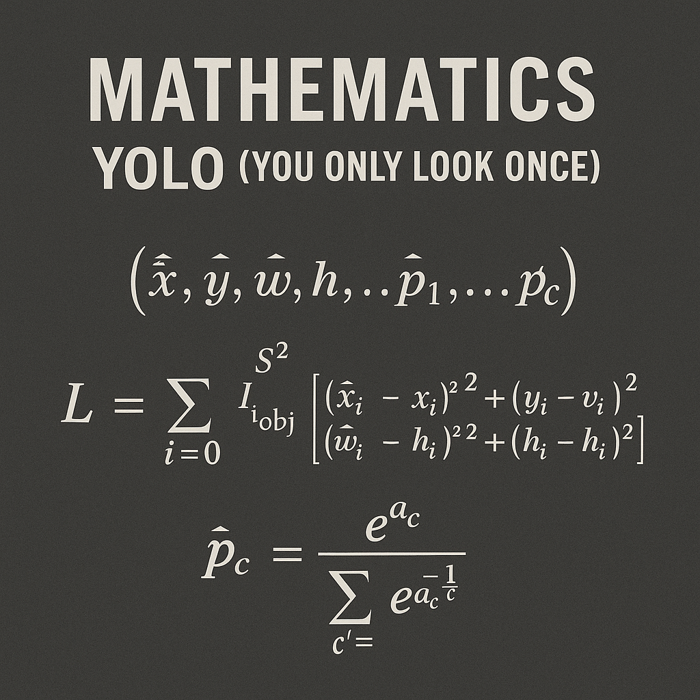

The Mathematics Behind YOLO: A Deep Dive into Object Detection

Introduction
You Only Look Once (YOLO) revolutionized object detection by treating it as a single regression problem, directly predicting bounding boxes and class probabilities from full images in one evaluation. Unlike traditional approaches that apply classifiers to different parts of an image, YOLO’s unified architecture enables real-time detection while maintaining high accuracy.
Core Mathematical Framework
Grid-Based Detection Paradigm
YOLO divides an input image into an \(S \times S\) grid. Each grid cell is responsible for detecting objects whose centers fall within that cell. This spatial decomposition transforms the object detection problem into a structured prediction task.
For an input image of dimensions \(W \times H\), each grid cell covers a region of size \((W/S) \times (H/S)\). The mathematical mapping from image coordinates to grid coordinates is:
\[ \begin{align} \text{grid}_x &= \lfloor x_{\text{center}} / (W/S) \rfloor \\ \text{grid}_y &= \lfloor y_{\text{center}} / (H/S) \rfloor \end{align} \]
where \((x_{\text{center}}, y_{\text{center}})\) represents the center coordinates of an object’s bounding box.
Output Tensor Structure
The network outputs a tensor of shape \(S \times S \times (B \times 5 + C)\), where:
- \(S\) is the grid size
- \(B\) is the number of bounding boxes per grid cell
- \(C\) is the number of classes
Each bounding box prediction contains 5 values: \((x, y, w, h, \text{confidence})\), and each grid cell predicts \(C\) class probabilities.
Bounding Box Parameterizatioz
Coordinate Encoding
YOLO uses a sophisticated coordinate encoding scheme that ensures predictions are bounded and interpretable:
Center Coordinates: \[ \begin{align} x &= \sigma(t_x) + c_x \\ y &= \sigma(t_y) + c_y \end{align} \]
where:
- \(t_x, t_y\) are the raw network outputs
- \(\sigma\) is the sigmoid function
- \(c_x, c_y\) are the grid cell offsets \((0 \leq c_x, c_y < S)\)
This formulation ensures that predicted centers lie within the responsible grid cell, as \(\sigma(t_x) \in [0,1]\).
Dimensions: \[ \begin{align} w &= p_w \times \exp(t_w) \\ h &= p_h \times \exp(t_h) \end{align} \]
where:
- \(t_w, t_h\) are the raw network outputs
- \(p_w, p_h\) are anchor box dimensions (in YOLOv2+)
The exponential ensures positive dimensions, while anchor boxes provide reasonable priors.
Confidence Score Mathematics
The confidence score represents the intersection over union (IoU) between the predicted box and the ground truth box:
\[ \text{Confidence} = \Pr(\text{Object}) \times \text{IoU}(\text{pred}, \text{truth}) \]
During inference, this becomes: \[ \text{Confidence} = \Pr(\text{Object}) \times \text{IoU}(\text{pred}, \text{truth}) \times \Pr(\text{Class}_i|\text{Object}) \]
The confidence score effectively captures both the likelihood of an object being present and the accuracy of the bounding box prediction.
Loss Function Architecture
YOLO’s loss function is a carefully designed multi-part objective that balances localization accuracy, confidence prediction, and classification performance.
Complete Loss Function
\[ \mathcal{L} = \lambda_{\text{coord}} \times \mathcal{L}_{\text{loc}} + \mathcal{L}_{\text{conf}} + \mathcal{L}_{\text{class}} \]
Localization Loss
\[ \begin{align} \mathcal{L}_{\text{loc}} &= \sum_{i=0}^{S^2} \sum_{j=0}^{B} \mathbb{1}_{ij}^{\text{obj}} [(x_i - \hat{x}_i)^2 + (y_i - \hat{y}_i)^2] \\ &\quad + \sum_{i=0}^{S^2} \sum_{j=0}^{B} \mathbb{1}_{ij}^{\text{obj}} [(\sqrt{w_i} - \sqrt{\hat{w}_i})^2 + (\sqrt{h_i} - \sqrt{\hat{h}_i})^2] \end{align} \]
where:
- \(\mathbb{1}_{ij}^{\text{obj}}\) indicates if object appears in cell \(i\) and predictor \(j\) is responsible
- \((x_i, y_i, w_i, h_i)\) are ground truth coordinates
- \((\hat{x}_i, \hat{y}_i, \hat{w}_i, \hat{h}_i)\) are predicted coordinates
The square root transformation for width and height ensures that errors in large boxes are weighted less heavily than errors in small boxes, addressing the scale sensitivity problem.
Confidence Loss
\[ \begin{align} \mathcal{L}_{\text{conf}} &= \sum_{i=0}^{S^2} \sum_{j=0}^{B} \mathbb{1}_{ij}^{\text{obj}} (C_i - \hat{C}_i)^2 \\ &\quad + \lambda_{\text{noobj}} \sum_{i=0}^{S^2} \sum_{j=0}^{B} \mathbb{1}_{ij}^{\text{noobj}} (C_i - \hat{C}_i)^2 \end{align} \]
where:
- \(C_i\) is the confidence score (IoU between predicted and ground truth boxes)
- \(\hat{C}_i\) is the predicted confidence
- \(\mathbb{1}_{ij}^{\text{noobj}}\) indicates when no object is present
- \(\lambda_{\text{noobj}}\) (typically 0.5) weights down the loss from confidence predictions for boxes that don’t contain objects
Classification Loss
\[ \mathcal{L}_{\text{class}} = \sum_{i=0}^{S^2} \mathbb{1}_{i}^{\text{obj}} \sum_{c \in \text{classes}} (p_i(c) - \hat{p}_i(c))^2 \]
where:
- \(p_i(c)\) is the conditional class probability for class \(c\)
- \(\hat{p}_i(c)\) is the predicted class probability
- \(\mathbb{1}_{i}^{\text{obj}}\) indicates if an object appears in cell \(i\)
Intersection over Union (IoU) Calculations
IoU is fundamental to YOLO’s operation, used in both training and inference:
\[ \text{IoU} = \frac{\text{Area}(\text{Intersection})}{\text{Area}(\text{Union})} \]
For two boxes with corners \((x_1,y_1,x_2,y_2)\) and \((x_1',y_1',x_2',y_2')\):
\[ \begin{align} \text{Intersection Area} &= \max(0, \min(x_2,x_2') - \max(x_1,x_1')) \\ &\quad \times \max(0, \min(y_2,y_2') - \max(y_1,y_1')) \\ \text{Union Area} &= (x_2-x_1)(y_2-y_1) + (x_2'-x_1')(y_2'-y_1') \\ &\quad - \text{Intersection Area} \end{align} \]
Non-Maximum Suppression (NMS)
NMS eliminates redundant detections using IoU-based suppression:
- Sort detections by confidence score (descending)
- While detections remain:
- Select highest confidence detection
- Remove all detections with IoU > threshold with selected detection
- Add selected detection to final output
The mathematical condition for suppression: \[ \text{Suppress if } \text{IoU}(\text{box}_i, \text{box}_j) > \tau_{\text{NMS}} \text{ AND } \text{conf}(\text{box}_i) < \text{conf}(\text{box}_j) \]
where \(\tau_{\text{NMS}}\) is the NMS threshold.
Anchor Box Mathematics (YOLOv2+)
YOLOv2 introduced anchor boxes to improve small object detection:
Anchor Box Selection
Anchor boxes are selected using K-means clustering on training set bounding boxes, with a custom distance metric:
\[ d(\text{box}, \text{centroid}) = 1 - \text{IoU}(\text{box}, \text{centroid}) \]
This ensures that anchor boxes are chosen to maximize IoU with ground truth boxes rather than Euclidean distance.
Prediction with Anchors
With anchor boxes, the prediction formulation becomes:
\[ \begin{align} x &= \sigma(t_x) + c_x \\ y &= \sigma(t_y) + c_y \\ w &= p_w \times \exp(t_w) \\ h &= p_h \times \exp(t_h) \end{align} \]
where \(p_w\) and \(p_h\) are the anchor box dimensions.
Mathematical Optimizations
Gradient Flow Analysis
The sigmoid activation in coordinate prediction ensures bounded gradients:
\[ \frac{\partial \mathcal{L}}{\partial t_x} = \frac{\partial \mathcal{L}}{\partial x} \times \frac{\partial x}{\partial t_x} = \frac{\partial \mathcal{L}}{\partial x} \times \sigma(t_x)(1-\sigma(t_x)) \]
This prevents exploding gradients while maintaining sensitivity to coordinate adjustments.
Multi-Scale Training Mathematics
YOLOv2 employs multi-scale training by randomly resizing images during training:
\[ \text{Scale factor} = \frac{\text{random choice}([320, 352, 384, 416, 448, 480, 512, 544, 576, 608])}{416} \]
This mathematical approach improves robustness across different input resolutions.
Computational Complexity Analysis
Forward Pass Complexity
For a network with \(L\) layers and an input of size \(W \times H \times C\):
- Convolutional layers: \(O(W \times H \times C_{\text{in}} \times C_{\text{out}} \times K^2)\) per layer
- Total complexity: \(O(W \times H \times \sum(C_{\text{in}} \times C_{\text{out}} \times K^2))\)
Inference Speed Mathematics
YOLO’s single forward pass eliminates the need for region proposal networks:
- Traditional methods: \(O(N \times \text{Forward pass})\) where \(N\) is number of proposals
- YOLO: \(O(1 \times \text{Forward pass})\)
This represents a significant computational advantage.
Advanced Mathematical Concepts
Focal Loss Integration (YOLOv3+)
Some YOLO variants incorporate focal loss to address class imbalance:
\[ \text{Focal Loss} = -\alpha(1-p_t)^\gamma \log(p_t) \]
where:
- \(p_t\) is the predicted probability for the true class
- \(\alpha\) is a weighting factor
- \(\gamma\) is the focusing parameter
Feature Pyramid Networks Mathematics
YOLOv3 uses feature pyramids with mathematical upsampling:
\[ \begin{align} \text{Upsampled feature} &= \text{Interpolate}(\text{Lower resolution feature}, \text{scale factor}=2) \\ \text{Combined feature} &= \text{Concat}(\text{Upsampled feature}, \text{Higher resolution feature}) \end{align} \]
Conclusion
The mathematical foundation of YOLO demonstrates elegant solutions to complex computer vision problems. By formulating object detection as a single regression problem, YOLO achieves remarkable efficiency while maintaining accuracy. The careful design of the loss function, coordinate encoding, and architectural choices reflects deep mathematical insights into the nature of object detection.
Understanding these mathematical principles is crucial for practitioners seeking to modify, improve, or adapt YOLO for specific applications. The balance between localization accuracy, confidence prediction, and classification performance showcases how mathematical rigor can lead to practical breakthroughs in computer vision.
The evolution from YOLO to YOLOv8 and beyond continues to build upon these mathematical foundations, incorporating advances in deep learning theory while maintaining the core insight that object detection can be efficiently solved through direct prediction rather than complex multi-stage pipelines.
- YOLO’s unified architecture treats object detection as a single regression problem
- The grid-based approach with mathematical coordinate encoding ensures bounded predictions
- The multi-part loss function balances localization, confidence, and classification objectives
- Mathematical optimizations like anchor boxes and multi-scale training improve performance
- Understanding the mathematical foundations enables effective adaptation and improvement